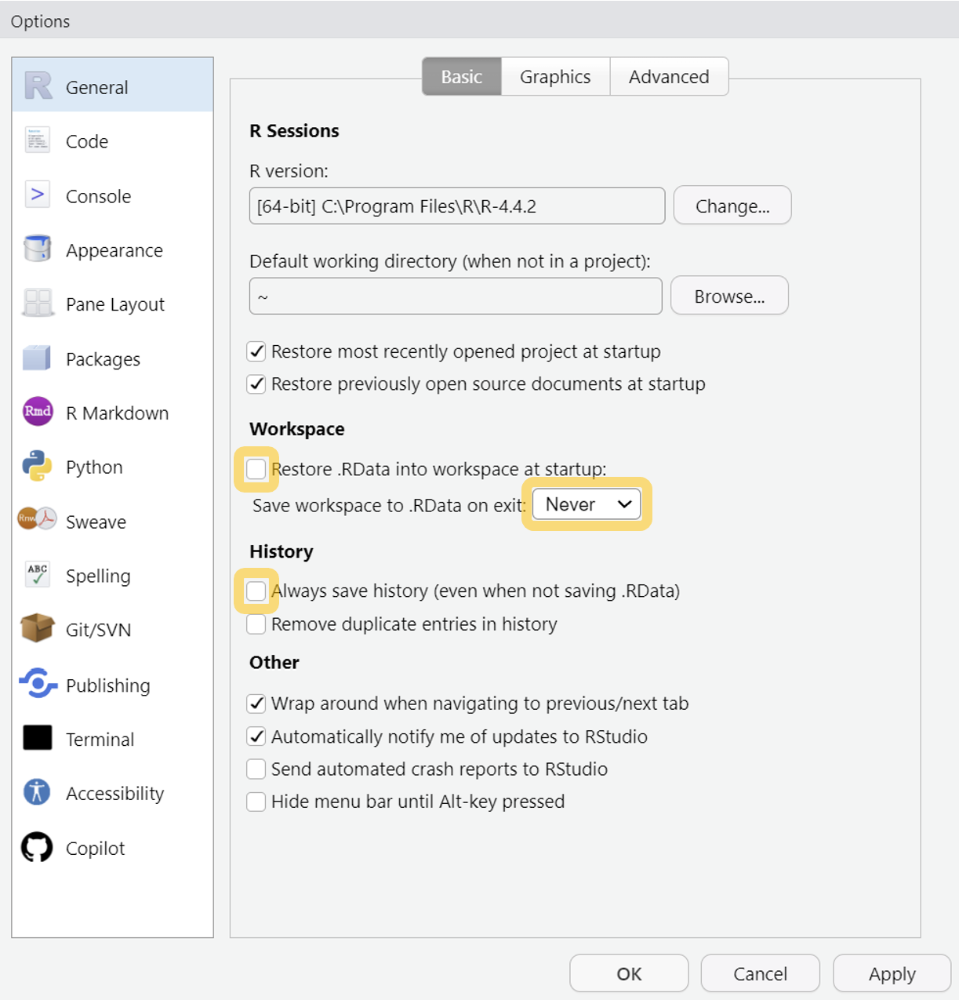

# Informationen über das Betriebssystem
Sys.info()
# Informationen über die R Version
R.version
# Informationen über die RStudio Version
RStudio.Version()1 Installation
Inhalt
- Step-by-Step Anleitung zum Installieren von R und RStudio für Windows und MacOS Betriebssysteme
- Informationen zum Einrichten der Programmierumgebung
Zuerst muss R und dann RStudio installiert werden. Wählen Sie hierfür je nach Ihrem Betriebssystem1 die passende Anleitung:
1.1 Step-by-Step Installation für Windows
1.1.1 Installation von R
Öffnen Sie die Installations-Website. Wählen Sie Download R for Windows, um die neuste Version von R (4.4.2 Pile of Leaves) zu installieren.
Laden Sie unter install R for the first time die Installationsdatei herunter.
Klicken Sie auf Download R-4.4.2 for Windows.
Öffnen Sie die Installationsdatei (oft im Ordner Downloads zu finden) und folgen Sie den Anweisungen. Falls untenstehend nicht anders erwähnt, behalten Sie die Standardeinstellungen bei.
- Unter_Select Setup Language_ wählen Sie am besten English als Sprache. Die englische Version macht es leichter im Internet Hilfe zu finden.
- Am besten speichern Sie R in einem Ordner auf dem Laufwerk
C:ab. Hierfür benötigen Sie Admin-Rechte.
Sobald das untenstehende Fenster erscheint, haben Sie R erfolgreich installiert.
1.1.2 Installation von RStudio
Wählen Sie Download RStudio Desktop for Windows, um die neuste Version von RStudio zu installieren.
Öffnen Sie die Installationsdatei (oft im Ordner Downloads zu finden) und folgen Sie den Anweisungen. Falls untenstehend nicht anders erwähnt, behalten Sie die Standardeinstellungen bei.
Wenn Sie R und RStudio installiert haben, fahren Sie hier fort.
1.2 Step-by-Step Installation für MacOS
1.2.1 Installation von R
Öffnen Sie die Installations-Website. Wählen Sie Download R for macOS, um die neuste Version von R (4.2.2 “Pile of Leaves”) zu installieren.
Laden Sie die zu Ihrer Version von macOS passende Installationsdatei herunter. Beachten Sie, dass es zwei Versionen gibt. In der Regel gibt es eine Fehlermeldung, falls Sie einen Intel Prozessor (ältere Mac-Modelle, ca. vor 2021) haben und daher nicht die obere Version verwenden können.
Öffnen Sie die Installationsdatei (oft im Ordner Downloads zu finden) und folgen Sie den Anweisungen. Falls die Auswahl erscheint, wählen Sie English als Sprache. Die englische Version macht es leichter im Internet Hilfe zu finden. Falls untenstehend nicht anders erwähnt, behalten Sie die Standardeinstellungen bei.
- Speichern Sie R auf der
Macintosh HDab. In der Regel entspricht dies den Standardeinstellung und Sie müssen nichts anpassen. Sie benötigen hierfür Admin-Rechte.
Sobald das untenstehende Fenster erscheint, haben Sie R erfolgreich installiert.
1.2.2 Installation von RStudio
Wählen Sie Download RStudio Desktop for MacOS, um die neuste Version von RStudio zu installieren.
Öffnen Sie die Installationsdatei (oft im Ordner Downloads zu finden) und folgen Sie den Anweisungen. Falls untenstehend nicht anders erwähnt, behalten Sie die Standardeinstellungen bei.
Wenn Sie R und RStudio installiert haben, fahren Sie hier fort.
1.3 Einrichten von RStudio
In einem nächsten Schritt können wir RStudio konfigurieren, so dass wir gut damit arbeiten können.
1.3.1 Verändern der Grundeinstellungen
Unter Tools > Global Options ... finden Sie viele Anpassungsmöglichkeiten für Ihre RStudio-Konfiguration.
Folgende Anpassung empfehlen wir, weil dies hilft zukünftige Fehler zu vermeiden. Entfernen Sie die beiden Haken bei den eingefärbten Kästchen und wählen Sie die Option Never.

Weiter können Sie hier beispielsweise unter Appereance die Farben und Schriftarten verändern.
1.3.2 Informationen zu Ihrem Setup
Um zu erfahren, wie Ihr installiertes Setup aussieht, können Sie folgende Befehle nutzen.
Diese Informationen sind unter Umständen sehr nützlich, wenn es ums Debugging/Beheben von Fehler geht.
1.3.3 Speicherort der Packages
Führen Sie folgenden Code in der Konsole aus, um zu erfahren in welchen Ordner RStudio Packages herunterlädt.
.libPaths()1.4 FAQ Installation
Hier werden häufige Fragen beantwortet.
Zurzeit noch keine Fragen und Antworten vorhanden.
Hilfreiche Informationen und Anleitungen zur Installation
- PsyTeachR Website: Ausführliche Installationsanweisungen inkl. Screenshots und Videoanweisung (in Englisch).
Sie können R und RStudio selbstverständlich auch mit Linux installieren. Wir gehen in dieser Veranstaltung davon aus, dass Sie dies ohne zusätzliche Anleitung ausführen können. Für allfällige linuxspezifische Probleme können wir nur in begrenztem Rahmen Hilfe anbieten. Falls Sie die Expertise und Motivation haben eine Step-by-Step Anleitung für Linux zu schreiben, dürfen Sie sich gerne bei uns melden.↩︎